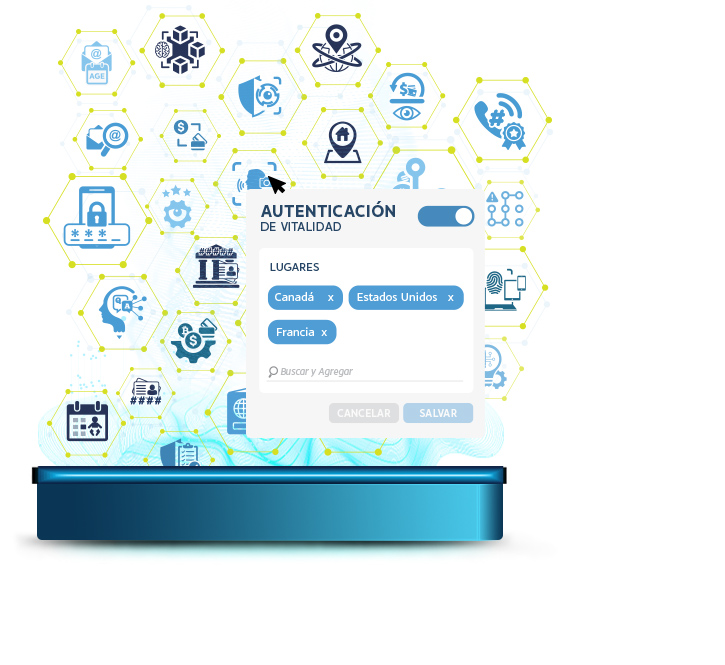
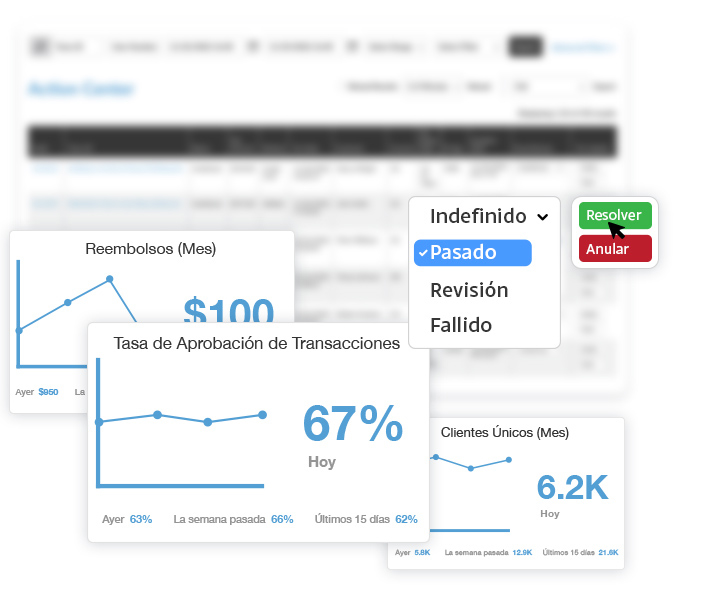

Conoce Tus Transacciones - Por Dentro y Por Fuera
Transacciones Confiables.
Nuestra plataforma global le permite administrar sin esfuerzo a sus clientes, el riesgo de fraude, los canales de pago y las transacciones en un centro centralizado, independientemente del mercado o la región.
Defensa Contra el Fraude
Cree reglas de riesgo o use nuestras reglas de riesgo predefinidas, establezca umbrales de riesgo y acciones dinámicas, y benefíciese de los flujos de trabajo de detección de fraude automatizados.
Patrones de Comportamiento
Escanee y vincule el comportamiento de transacciones y cuentas para identificar tendencias, patrones de comportamiento y uso de múltiples cuentas para una reacción rápida al fraude.
Proteja su Negocio y sus Ingresos
Las pérdidas de comerciantes a nivel mundial por fraude de pagos en línea entre 2023 y 2027 superarán los $343 mil millones. Detecte señales de riesgo y no pierda sus ingresos por fraude.
Todos los datos...
para transacciones seguras.

Bases de datos
Cargue, administre y aproveche las bases de datos blancas y negativas en tiempo real, junto con las razones desaprobadas y las asociaciones de alto riesgo.
Red AcuityTec
Acceda a nuestras bases de datos de lista blanca, negativas y de alto riesgo de élite y bien establecidas que se expanden continuamente en nuestra red desde 2011.
Ubicación Geográfica
Obtenga información crítica, incluido el país, la zona horaria, el código postal, el código de área, la dirección, el proxy, la dirección IP y la información de la red.
Inteligencia de Dispositivos
Afirme la identidad del usuario comparando las huellas dactilares del dispositivo, la identificación del dispositivo, la reputación y la actividad sospechosa de detección de evasión.
Comprobación de BIN
La búsqueda automática obtiene el número de identificación bancaria de su cliente, incluido el emisor de la tarjeta, el nivel de la tarjeta y los datos del tipo de tarjeta y alerta cuando se verifica una nueva tarjeta.
Verificación de Cuenta Bancaria
Reduzca el riesgo financiero de las transacciones ACH o EFT mediante la recuperación y el análisis cruzado de la información de KYC y de la cuenta bancaria del cliente con los detalles proporcionados.
Análisis Criptográfico
Asegúrese de que las transacciones criptográficas sean válidas, seguras y libres de actividades ilícitas al verificar las direcciones de las billeteras contra el riesgo en un conjunto de cadenas de bloques.
Ver Solución
Autenticaciones 2FA
Agregue una capa adicional de seguridad y habilite la autenticación multifactor desde preguntas basadas en el conocimiento, teléfono SMS de 4 pines hasta reconocimiento facial en vivo.
Ver Servicios de Datos
Identificación Digital Enriquecida
Un conjunto completo de KYC basado en la web está disponible para reforzar las transacciones desde el teléfono, verificación de dirección, SSN, validación de identidad global y más.
Ver Servicios de Datos

Análisis de Riesgos 24/7
Enfoque basado en reglas
Seleccione entre reglas de riesgo predefinidas o configure infinitas opciones con secuencias de comandos de formato libre. Asegúrese de que las verificaciones transaccionales y el análisis de riesgos satisfagan su apetito de riesgo único.
Alertas de análisis
En función de sus umbrales de riesgo personalizados, reciba alertas de inmediato para las puntuaciones de riesgo generadas después de las verificaciones de datos transaccionales que identificaron riesgos o actividades sospechosas.
Aprendizaje automático
Una plataforma combina datos, comportamiento y patrones para descubrir rápidamente posibles amenazas de riesgo y realizar automáticamente acciones del sistema o hacer recomendaciones para proteger su negocio del fraude.
Ver Detección de Fraude
Supervisar y Administrar
Cola de Transacciones
Vea rápidamente toda la información de alto nivel de la transacción con la capacidad de filtrar por información del cliente, identificación de la transacción, puntajes de riesgo, procesador, rango de fechas y más. Realice revisiones de fraude, profundice en el perfil de un cliente y liquide o anule una transacción, todo desde un centro de acción centralizado.
Widgets del Tablero
Los widgets del tablero de datos en vivo configurables personalizados aseguran una vista enfocada de los datos, desde conversiones, actividad del centro de acción, tasa de aprobación, promedio de boletos por primera vez, etc.


Granular en un Clic
Boleta de Transacción
Reciba detalles granulares que incluyen fecha, monto, método de pago, resultados de verificación, puntaje de riesgo, información financiera, límites de depósito, detalles del cliente y más. Garantizar que todos los datos se capturen para identificar cambios en el comportamiento automáticamente mientras se respaldan sus informes AML.
Perfiles de Clientes
Sumérjase en cualquier cliente para ver sus resultados de datos, historial de transacciones y alertas y administre patrones, evidencias, excepciones, dispositivos e historial de inicio de sesión con una vista clara y unificada.
Ver Monitoreo de Fraude
Perspectivas de Fraude
Los datos orquestados y el aprendizaje automático brindan recomendaciones de prevención de riesgos a lo largo de su flujo transaccional. Identifique múltiples cuentas, comportamientos sospechosos y patrones que puedan indicar fraude.
Gestión de Casos
Los datos orquestados brindan vistas claras del riesgo. Nuestros flujos de trabajo de verificación automatizados le notificarán las señales de riesgo que requieren intervención humana. Ahorrándole tiempo y esfuerzo en la gestión de transacciones y clientes.
Contracargos
Prevenir, disputar y analizar las devoluciones de cargo de manera eficiente. Reciba alertas en tiempo real para interceptar y resolver disputas de pago con un centro de resolución de devoluciones de cargo automatizado y un panel en vivo.
Reporte B.I.
Nuestros expertos en riesgo dedicados trabajarán con usted para establecer B.I. personalizado, informando para garantizar que las reglas de riesgo se optimicen por región o mercado para combatir el fraude sin comprometer las tasas transaccionales.
Solución Completa
- Verificaciones de datos transaccionales y KYC
- Flujos de trabajo de verificación personalizados
- Filtros personalizados, ajustes y configuraciones de reglas
- Motor de puntuación de riesgos con aprendizaje automático
- Perfiles, historial de transacciones y centro de acción
- Herramientas colaborativas y gestión de listas
- Informes de actividades sospechosas y B.I. datos
Obtener una Demostración Hoy